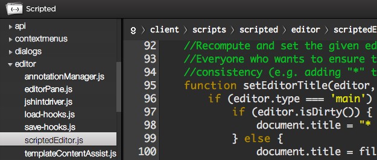
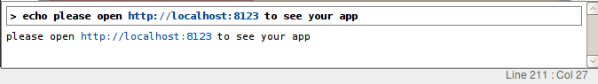

| Editing enhancements | |
| Editor update and new features | Scripted 0.4 has upgraded an Orion editor from Jan 2013 (version 20130123-1139). This gives Scripted theming capabilities and also provides new facilities like a line wrapping mode and the ability to show whitespace. These new actions are listed in the help: 'Toggle Visible Whitespace' and 'Toggle Wrap Mode'. Bind these actions to a key if you want to try them out. (Any keys you bind will be persisted in your USER_HOME/.scriptedrc/keymap-*.json) |
| Code template improvements |
We have improved code templates and snippets in Scripted. From an end user's point of view, you can select a word in
a JavaScript or HTML file and surround the word with some text. For example, in a JavaScript file, you can make a selection and
press CTRL+Space:

|
| Tooltip hovers now show JSdoc |
Hovers on function and variable references and declarations now include JSDoc. A declaration with simple JSDoc attached to it will look like this:
|
| Tooltip hovers now show function parameter types |
Hovers on function references and declarations now include the parameter types. In the following example, you can see the full type signature for the
performOperation function:

|
| Content assist auto-activation | Content assist will now auto-activate in JavaScript files after pressing a '.'. |
| Dark/light themes | Exploiting the theming support in the latest Orion editor, Scripted now has a dark theme with light text on a dark background. The colors within the themes are not configurable at the moment but a toggle is provided in the toolbar at the top to switch quickly between dark and light (or press F3).  |
| Auto indent and unindent |
After entering a { and pressing ENTER the cursor will be
appropriately indented on the next line. When the block is closed
with a } and ENTER pressed again, that will be
automatically unindented. This is not a sophisticated implementation at the
moment, so please raise issues for any problems you see. If whatever problems you hit with it become too irritating,
use the following config options in your .scripted file to turn it off!
{
editor: {
unindent_after_close_curly: false,
indent_after_open_curly: false
}
}
|
| Zencoding/Emmet support |
Emmet (also called Zen Coding) is an editor plugin that supports a greatly improves HTML & CSS workflow. Scripted now has Emmet support in the editor.
The key bindings for Emmet commands are Ctrl+Shift+n, where n is a number from 1-9. See the complete bindings in the help panel (open by pressing F1)
|
| UI configuration | |
| More font size configuration |
Previously the font size could only be set for the editor. It can now be set for the breadcrumb, navigator and help panel.
The configuration options are:
{
ui: {
font_size_breadcrumb: 16,
font_size_nav: 16,
font_size_help: 14
}
}
|
| Integrated server | |
| Integrated server (with livereload) |
On the toolbar is a new 'play' icon. When pressed this will launch a small server that 'serves' the content of the project
currently being edited. The project is served at http://localhost:8000. After pressing 'play' the button will change to a
'stop' icon which will stop the server when pressed. If you wish to serve a directory other then the project root, you can set
the webroot in the config file:
{
application: {
webroot: "client" // project subfolder
}
}
The server that is launched actually includes some basic livereload integration. To exploit this you (currently) need to include
the following script snippet in your html:
<script src="http://localhost:35729/livereload.js"></script>
With that in place, the app available on localhost:8000 will be live reloading, this means it will notice css file changes and
dynamically update them on the page you are viewing. It will notice changes to js files but those will trigger a page reload.
|
| Extensibility | |
| Plugins |
Scripted's client-side app can now be extended via plugins written in JavaScript.
A Scripted plugin is a JavaScript AMD module that gets loaded dynamically by the Scripted client app if it is found in 'the right place'. Scripted 0.4. will look for plugins in two different places. a) '~/.scriptedrc/plugins' folder and b) the 'plugins' folder inside the Scripted distribution itself. A Scripted plugin is a 'first-class' citizen in the Scripted client app. It is just an AMD module, like any other client-side module in the Scripted code base. As such, a plugin can essentially do anything that any other client-side Scripted code can do. However as internal APIs are unstable and are not typically well-documented nor easy to use, a growing set of clean and stable public APIs are being developed. These APIs are designed specifically to make it easy to implement certain kinds functionality as plugins. Currently we already have APIs to support the following kinds of things:
The plugin architecture and APIs are a work in progress. We envision that the APIs will grow and may still evolve as we strive to support more use cases. Do you have something you'd like to add to Scripted as a plugin? If the current APIs don't work for you, or you find them too hard to use, we would like to hear from you! More details about the plugin-architecture and APIs can be found on the Scripted Wiki. |
| This and that | |
| Fn keys for toolbar buttons |
Previously only F1 was bound to help, now all the actions on the toolbar have Fn keys:
F1=help F2=toggle navigator open/closed F3=toggle day/night theme F4=toggle console open/closed F5=toggle side panel open/closed F6=start/stop application |
| Open File changes | The open file dialog now shows the recent files that have been edited at the top of the list (in bold). These are subject to filtering as you type, just like the other entries. |
| Node all the way | In previous versions of Scripted the launch scripts were platform specific batch files and shell scripts, with 0.4 they are now node.js scripts. |
| Console Links |
Scripted's client-side app can now be extended via plugins written in JavaScript.
The exec-console now searches its contents for things that look like http or https urls and turns those into proper links that open in a new browser tab when clicked on.  |
| More asynchronicity | Some more of the editor behaviour has been made asynchronous thanks to a contribution from Tony Georgiev. This means you get into a position where you can edit your code even faster. It also enables Scripted to behave better when the server is deployed remotely, more on this soon. |
| Navigator Context Menu | The right-click context menu available in the navigator has received numerous changes to improve usability. |
| Credits for 0.4 | |
| Special thanks to: | We are grateful to these people for their contributions to 0.4: Loc Nguyen, Tony Georgiev, Scott Andrews, John Hann, Brian Cavalier, Jeremy Grelle |